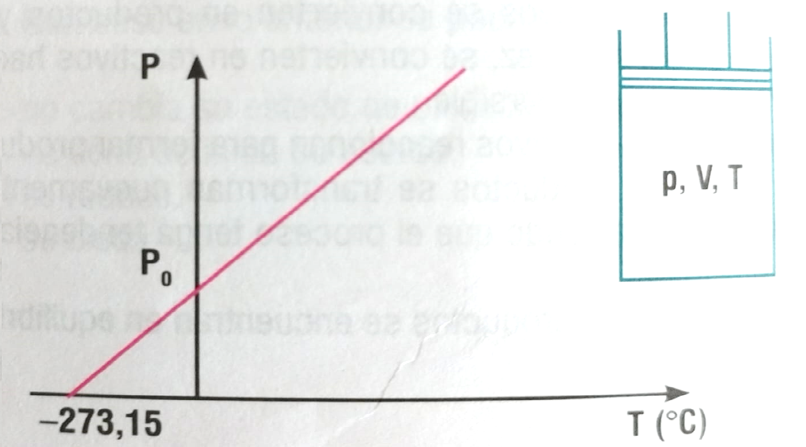
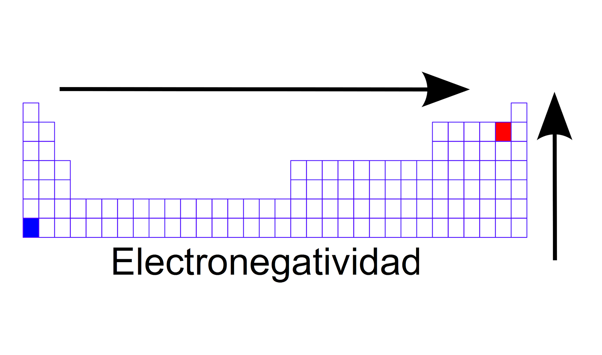
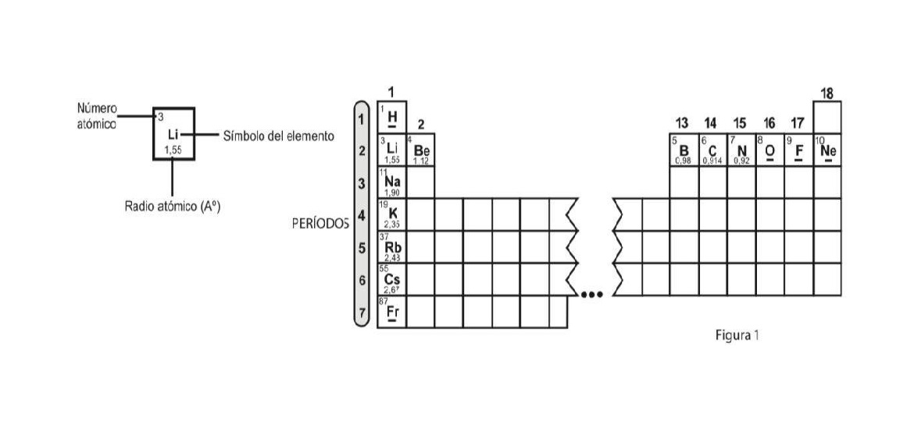

Teniendo en cuenta el comportamiento del radio atómico en la gráfica, podemos inferir que los elementos con mayor radio atómico son los que están ubicados en el grupo

Los elementos pertenecientes al grupo VIIA de la tabla periódica son: F, Cl, Br, I, y At. Teniendo en cuenta el comportamiento de la electronegatividad, se puede deducir que:

Teniendo en cuenta la información de la gráfica, podemos deducir que a volumen constante se espera que

La electronegatividad es una propiedad periódica importante. En relación con esta propiedad, señala la alternativa correcta. (Consulta la tabla periódica)

Teniendo en cuenta las características de las partículas en los diferentes estados de la materia, tal y como los muestra la imagen, podemos inferir que las fuerzas de...

Para clasificar un enlace en iónico o covalente, el principal criterio es la diferencia de
electronegatividades entre los átomos enlazados. (Ver tabla)
¿Cuál de las siguientes sustancias forma un enlace iónico de carácter fuerte?

Teniendo en cuenta la imagen y que el carbono (C) pertenece al grupo IV A de la tabla periódica y el oxígeno (O) pertenece al grupo VI A de la tabla, podemos concluir que en la molécula CO₂ el

De acuerdo con la información de la figura, es correcto afirmar que el radio atómico para los elementos del grupo 1 de la tabla periódica:
